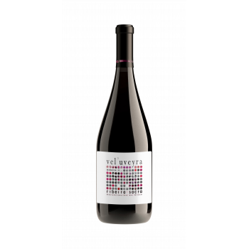
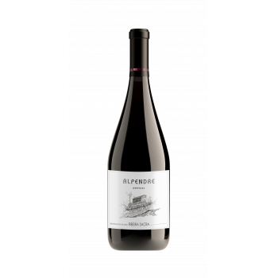
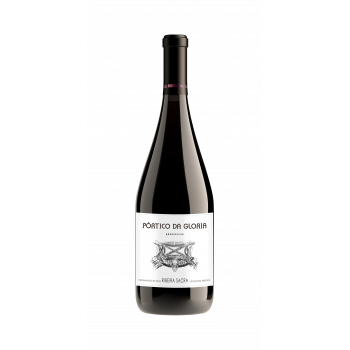

MenciaVel'uveyra Barrica
Rojo violáceo, aromas de sotobosque, bayas silvestres, mora y zarza. El alma de la Mencia en Ribeira Sacra.
13 €

Bodega artesanal con D.O. Ribeira Sacra. Mencia, Merenzao, Godello y otras variedades gallegas vendimiadas a mano en pendientes heroicas, donde la tradición y el paisaje dan forma a cada botella.

Ronsel do Sil nace en 2010 con la voluntad de dejar huella, como la estela de un barco sobre el agua. Ubicada en un antiguo lagar restaurado en Parada de Sil, la bodega elabora vinos artesanales que ensalzan las variedades autóctonas de la Ribeira Sacra.
Dos hectáreas de viñedo propio en bancales de fuerte pendiente, vendimia manual y una filosofía de respeto absoluto por el paisaje y la sostenibilidad.
Tintos, blancos y rosados elaborados con las uvas propias de la Ribeira Sacra: Mencia, Merenzao, Brancellao, Caino, Godello, Treixadura y Dona Branca.

MenciaRojo violáceo, aromas de sotobosque, bayas silvestres, mora y zarza. El alma de la Mencia en Ribeira Sacra.

MerenzaoFruta roja especiada, endrinos, rosa. Granitico, fresco, fino y sutil. Una variedad minoritaria con carácter.

BrancellaoColor rubi distintivo de esta variedad minoritaria autóctona. Expresion pura del terroir de la Ribeira Sacra.
Nuestro nombre, Ronsel, es la estela que deja un barco al navegar. Queremos dejar nuestra huella de pasión y respeto por el paisaje y la cultura del vino.
Visita guiada a la bodega y a los viñedos en bancales junto al río Sil, con cata de vinos autóctonos y aperitivo. Una experiencia que no olvidarás.
Pasea entre las cepas en las terrazas sobre el Sil y descubre la viticultura heroica de la Ribeira Sacra, con vistas al canon del rio.
Conoce el lagar restaurado, los depósitos de acero y las barricas de roble francés y americano donde reposan los vinos.
Degusta los vinos con D.O. Ribeira Sacra acompañados de productos locales, mientras Maria Jose te transmite su pasión por el vino.
4,4 sobre 5 en TripAdvisor, con 81 opiniones. Estas son algunas de las más recientes.
Visita mágica e inolvidable. Maria Jose te transmite su pasión por el vino en todo momento. Una experiencia única en la Ribeira Sacra.
Ha sido una visita inolvidable. Aparte de sus excelentes vinos y las bellas vistas, la propietaria explica todo con mucho detalle y carino.
Una experiencia fantástica en una gran bodega. Muy recomendable y con unas vistas fabulosas del río Sil. La propietaria es muy amable.
Sí. Ofrecemos visitas guiadas a la bodega y a los viñedos en bancales sobre el río Sil, con cata de vinos y aperitivo. Adultos 18 euros, jóvenes de 12 a 18 años 9 euros, menores de 12 gratis. Es necesario reservar con 24 horas de antelación.
Cultivamos variedades autóctonas de la Ribeira Sacra: Mencia, Merenzao, Brancellao y Caino en tintas; Godello, Treixadura y Dona Branca en blancas. Todas se vendimian a mano en bancales de fuerte pendiente.
En Abarxa, Sacardebois, 32740 Parada de Sil (Ourense), a orillas del río Sil, dentro de la D.O. Ribeira Sacra. Cerca del Parador de Santo Estevo y del Monasterio de Santa Cristina.
Sí. Disponemos de tienda online en nuestra web donde se pueden adquirir nuestros vinos tintos, blancos y rosados con envío a toda la península.
Las visitas se realizan en dos turnos: de 11:00 a 14:00 y de 17:00 a 20:00, todos los días de la semana. La duración estimada es de una hora. Es imprescindible reservar con al menos 24 horas de antelación llamando al 685 87 77 40.
Estamos en Parada de Sil, a orillas del río Sil, cerca del Parador de Santo Estevo. Reserva tu visita por teléfono o WhatsApp.